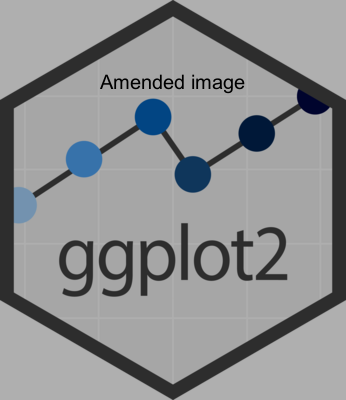
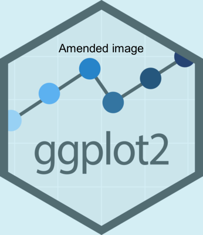

Harnessing the power of {magick} in R for images’ modifications
Example codes for handling images in R using various userful functions of the {magick} package
#TidyTuesday
{magick}
Author
Aditya Dahiya
Published
November 25, 2024
Harnessing the power of {magick} for working with images in R.
Code
# Loading the relevant packageslibrary(tidyverse) # Data Wranglinglibrary(magick) # For handling imageslibrary(scales) # Scales in the ggplot2# Thumbnail for this webpageimage_read("https://repository-images.githubusercontent.com/35780977/1ee2143f-0707-42b5-8839-d5bb5339d03c") |>image_resize("x500") |>image_crop("500x500+250") |>image_write(here::here("projects", "images", "magick_images_logo.png"))
Part 1: Transparent Overlays on images
The “Magick Overlay” post about adding a semi-transparent overlay to an image, hosted on The Mockup blog by Tom Mock, dated June 22, 2022, explores the creation of dynamic, semi-transparent overlays using the magick package in R, which interfaces with ImageMagick’s powerful image processing capabilities.
The technique involves defining a custom overlay function, create_overlay(), which applies a coloured rectangle over an image with adjustable transparency, enhancing the visual presentation for text overlays or focal points in images. The process includes reading an image, applying color effects like image_colorize(), and compositing images with precise control over placement and transparency.
Code
# Load a temporary image to work withggplot2_logo <-image_read("https://upload.wikimedia.org/wikipedia/commons/5/5a/Ggplot2_hex_logo.png")ggplot2_logo |>image_resize("x400")
Figure 2: Colourizing the image with image_colorize() adding a opacity index and colour
1.2 Creating a custom function create_overlay() to complete overlay the image, including transparent areas
Tip
Using hex codes to apply colours: standard hex codes are 6 digits (e.g., #000000 for black). Adding two digits at the end adjusts transparency (e.g., #00000050 for 50% transparency).
Code
# Credits: https://themockup.blog/posts/2022-06-22-magick-overlay/# By, Tom Mock.create_overlay <-function(img, overlay_color ="#00000060", out_file =NULL){if(!("magick-image"%in%class(img))){ raw_img <-image_read(img) } elseif ("magick-image"%in%class(img)){ raw_img <- img }# get image dimensions img_info <-image_info(raw_img)# draw the raw image img_overlay <-image_draw(raw_img)# draw a rectangle of equal proportion to the raw imagerect(0, 0, img_info$width, img_info$height, col = overlay_color, border =NA)# save the resultsdev.off()# return it or return + save outif(!is.null(out_file)){image_write(img_overlay, path = out_file)message(paste("Image saved as", out_file))return(img_overlay) } else {return(img_overlay) }}ggplot2_logo |>image_resize("x400") |>create_overlay(overlay_color ="#00000050") |>image_annotate("Amended image", size =20,location ="+100+70")ggplot2_logo |>image_resize("x400") |>create_overlay(overlay_color ="#76c9de50") |>image_annotate("Amended image", size =20,location ="+100+70")

(a) Black overlay

(b) Light Blue overlay
Figure 3: Using the custom crate_overlay() function
Part 2: Understanding geometry argument in {magick} functions
The geometry argument in the {magick} package is a powerful syntax used to specify dimensions and coordinates for transformations such as cropping, resizing, or adjusting images. The format of the geometry string is AxB+C+D. Each part of the string is optional and serves a specific purpose: —
Component
Meaning
Example
A
Width (pixels)
200x (width: 200px)
B
Height (pixels)
x300 (height: 300px)
C
Horizontal offset (pixels), positive or negative
+50 or -50
D
Vertical offset (pixels), positive or negative
+100 or -100
Resizing: When specifying only A or B, the image is resized while maintaining its aspect ratio.
Example: 200x300 resizes the image to exactly 200px wide and 300px high.
Example: 200x resizes the image to 200px wide, maintaining the aspect ratio.
Cropping: When C and D are used, they specify the top-left corner of the cropping rectangle.
Example: 200x300+50+100 crops the image to 200x300 pixels starting 50px right and 100px down.
Offsets: +C+D can adjust the positioning without altering size.
Example: +20+30 shifts the image 20px to the right and 30px down.
Aspect Ratio: Using ! after dimensions forces exact resizing, ignoring the aspect ratio.
Example: 200x300! forces the image to 200x300 pixels, potentially distorting it.
Table of Variations
Syntax
Action
Example Description
200x300
Resize to 200px wide and 300px high
Scales the image to these dimensions.
200x
Resize to 200px wide, maintain aspect ratio
Height is calculated to keep proportions.
x300
Resize to 300px high, maintain aspect ratio
Width is calculated to keep proportions.
200x300+50+100
Crop 200x300 pixels starting at (50, 100)
Region selection for cropping.
+50-30
Move image 50px right, 30px up
Image shifts by specified offset.
200x300!
Resize to exactly 200x300, ignoring ratio
Forces exact dimensions, may stretch or compress image.
200x300>
Resize to fit within 200x300 (no upscaling)
Image shrinks if larger but won’t enlarge smaller images.